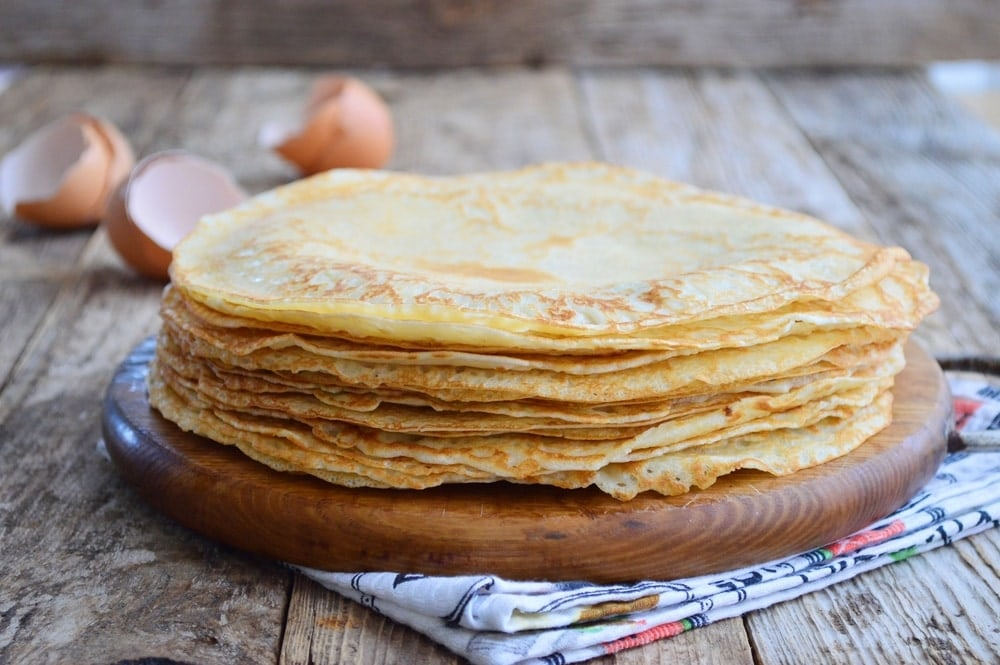

Pancake Recipe

Description
This recipe is for traditional Hungarian pancakes. The recipe is for one serving (see picture above).
Ingredients
- Flour - 200 g
- Eggs - 2 pcs
- Milk - 0,3 l
- Sparkling Water - 0,2 l
- Salt
- Oil - 75 ml + extra for baking
Steps
- Add the flour, eggs, milk, sparkling water and salt to a bowl and mix thoroughly
- Once mixed, slowly add the oil in a continous thin stream while mixing
- If the pancake mix is too thick, add some milk. If it is too runny, add some flour
- Preheat non-stick pan, and add a tiny drop of oil. You only need oil for the first pancake! (Because there is oil in the mixture)
- When the first side hardens, flip to other side
- When the other side hardens, you're done :)